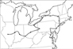

"34 Days to Washington: Taking Measure Across the American Landscape" is a process art project involving bicycling 2034 miles from Springfield, Illinois to Washington D.C.following the meandering route that Abraham Lincoln road on his inaugural train to Washington D. C..
This work will attempt to address the interelationships between movement through the landscape under human power and the contempletive low impact space it affords. During the time of travel, I reflected on the power of a cultural icon, well being in a civil society, contemporary aesthetics, and the individual process of conceptually mapping a landscape. By retracing the route Abraham Lincoln traveled from Springfield, Illinois to Washington D.C. after he was elected, it is my intent to explore the validity of Lincoln in a contemporary figure in civil society as well as the personal mythologies I see in American history.
Marcia Wood Gallery, Atlanta
June 2-July 2, 2011
Newzones Gallery, Calgary, Canada
December 1, 2011
For me, the thing that really defines the new world is a mythic journey; as well
as the movement west and into the landscape. So I decided to take one of those
epic journeys myself.
Rather than venture off in some arbitrary direction, I chose to journey east.
That path was and is a defining route for people aspiring to positions of power,
but for me the interesting thing was that it opposed the notion of 'moving
westward'. Here I began, with an open mind in search of a wilderness landscape,
even though the east might have seemed over-trampled with crowded
cities and urban congestion. I prepared by packing Thoreau's "Backwoods and
Along the Seashore", and to make the passage more intriguing, I decided to
travel via bicycle for what would be over 2000 miles..


mysterious island
Perimeter Gallery, Chicago
February 12 - March 13, 2010
I don't find it hard to believe that the arrangements of certain fractal algorithms could give rise to the design of a broccoli or perhaps the arrangements of particles and mathematical equations could combine to net the experiences of eating a strawberry. But could a Geometric order or an arithmatic progression somehow come together to create a temporal science of movement? Studies conducted recently generating sound clips out of data from the universe have revealed music coming from our own solar system. Mark Whittle, the astronomer at the University of Virginia first figured out that these sounds created a symphony starting on a major chord and then subtly transforming into a minor chord. A musical note was also detected coming from the Perseus
night
Marcia Wood Gallery, Atlanta
April 26 - June 2, 2007
Gazing out into the night, I find it compelling the way trees, buildings and telephone poles become un-ordinary objects in a new mysterious space. Sometimes, the horizon disappears and the boundary between Earth and sky evaporates. Sometimes, it is both night and day. "Vesper" (the evening star, especially Venus ), marks the time of transition, where the spiritual feels near and ordinary objects are viewed against the infinite.